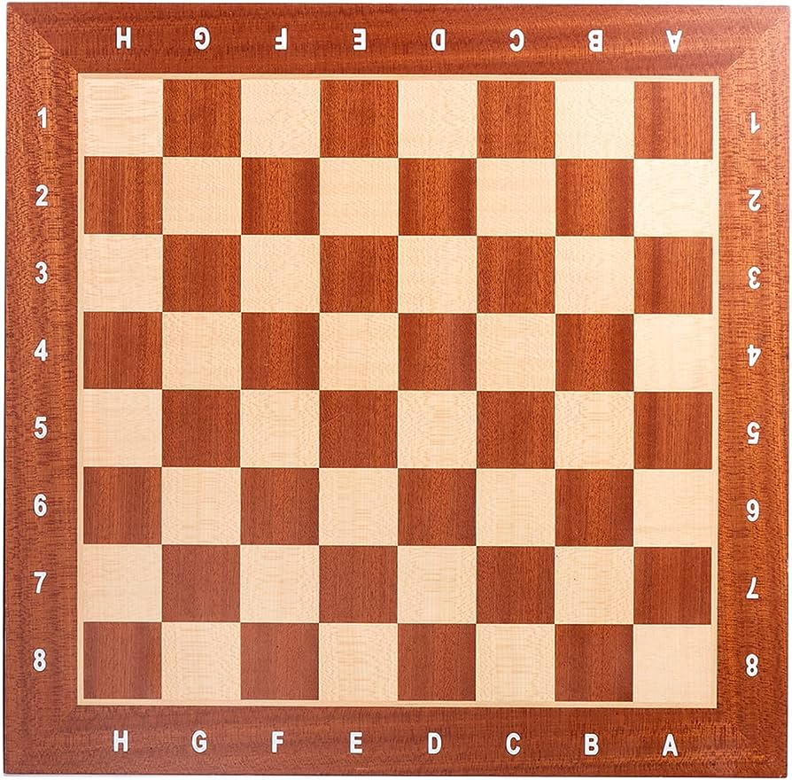

O objetivo principal do xadrez é dar um xeque-mate no rei, ou seja, colocar o rei sob ameaça de captura.
No jogo temos 16 peças no tabuleiro sendo eles
Sendo 16 peças brancas e 16 peças pretas, totalizando 32 peças no tabuleiro.
A seguir veremos como funciona a movimentação das peças individualmente:
O peão se movimenta uma casa para frente (com exceção no inicio, que a o peão pode se movimentar 2 casas para frente), mas captura na diagonal.
A torre se movimenta em cruz, ou seja, se movimenta por todas as casas em linha horizontal e vertical.
O cavalo se movimenta em formato de L, sendo 2 casas em qualquer direção (vertical ou horizontal) e depois mais uma em sentido perpendicular e vice-versa, podendo pular outras peças.
O bispo se movimenta em todas as casa na diagonal.
A rainha pode se movimentar em todas as casa na linha horizontal, na linha vertical e na linha diagonal.
O rei se movimenta em uma área de 3x3, ou seja, se movimenta uma casa em qualquer direção.
o tabuleiro é composto de 64 quadrados sendo 32 brancos e 32 preto, que ficam intercalando-se entre si, as peças emcima do tabuleiro devem ser organizadas na sequinte ordem: Primeira fila (da direita para a esquerda): torre, cavalo, bispo, rei, rainha, bispo, cavalo, torre. Segunda fila: oito peões.
Como mostrado no primeiro topico tem como objetivo dar xeque-mate, porem existe diversos movimentos que são essenciais para conseguir jogar que é a captura das peças, também chamada de conquistar, tomar ou "comer" é parte essencial do jogo. As peças capturadas são retiradas do jogo, com exceção do rei, já que sua captura decreta o fim da partida. A peça que capturou deve então ocupar a casa em que estava a peça capturada. A captura respeita o movimento básico de cada uma das peças.
O lance em que o rei é ameaçado pelas peças adversárias é chamado xeque. O jogador que propõe o ataque ao rei diz a palavra "xeque" para anunciar que o rei está em risco (em xeque). Após decretado o xeque, só é permitido ao jogador que o recebe movimentar peças para a defesa do rei e assim, sair do xeque. A vitória no xadrez é determinada quando um jogador realiza um movimento de ataque ao rei adversário, deixando-o sem opção de movimento para a defesa ou de fuga para o rei. Quando isso ocorre o jogador que realizou o ataque ao rei decreta o "xeque-mate" e sela a sua vitória.